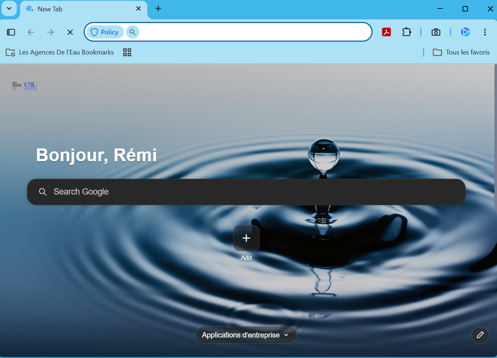

~/ experience
Expérience professionnelle.
Mon stage de deuxième année de BUT à l'Agence de l'eau Adour-Garonne.
Mon stage en bref
- Poste
- Stagiaire en sécurité informatique
- Structure
- Agence de l'eau Adour-Garonne — Toulouse (31)
- Service
- DSIUN — service infrastructure et sécurité
- Période
- 7 avril – 12 juin 2026
- Cadre
- Stage de 2e année de BUT Réseaux & Télécommunications
Le contexte
L'Agence de l'eau Adour-Garonne est un établissement public qui protège les ressources en eau et les milieux aquatiques. J'ai effectué mon stage au siège de Toulouse, dans le service infrastructure et sécurité de la DSIUN (Direction des Systèmes d'Information et des Usages Numériques), qui assure le bon fonctionnement et la sécurité des équipements informatiques et des réseaux de l'agence.
Face à la recrudescence des cybermenaces, l'équipe informatique a voulu renforcer les défenses de l'agence en sécurisant l'un de ses points les plus vulnérables : le navigateur web. La question à résoudre :
Comment optimiser la sécurité des accès à la navigation sur internet sans impacter le quotidien des employés ?
Ma mission
Ma mission principale : configurer Prisma Browser, le navigateur isolé de Palo Alto Networks. Chaque session de navigation s'exécute dans un environnement étanche : si un utilisateur clique sur un lien infecté, la menace reste enfermée dans le navigateur et ne peut atteindre ni l'ordinateur ni les serveurs de l'agence.
Je l'ai fait depuis la console d'administration, en définissant des règles de sécurité précises. J'ai travaillé sur ce projet pendant toute la durée du stage, avec un point chaque semaine avec le responsable sécurité (RSSI), mon maître de stage et l'équipe projet. J'y faisais valider mes choix de configuration et j'y proposais mes propres idées de réglages.
Mes réalisations
- Règles de connexion — Qui peut accéder au navigateur, selon le profil de l'utilisateur (agents ou prestataires), le type d'appareil (géré ou non, mobile) et sa localisation.
- Accès et données — Autorisation des applications internes et de Microsoft 365, avec téléchargements sécurisés, blocage du copier-coller et des captures d'écran, et floutage automatique des données sensibles.
- Filtrage du web — Blocage des sites non professionnels et malveillants, avec une réaction graduée selon le niveau de risque d'un site : accès, avertissement ou blocage.
- Sécurité du navigateur — Limite du nombre d'appareils par session, verrouillage après inactivité, double authentification (MFA), HTTPS imposé, DNS chiffré (DNS-over-HTTPS) et outils de développement désactivés.
- Personnalisation et routage — Navigateur aux couleurs de l'agence, raccourcis différents pour chaque agence régionale, et acheminement du trafic via Prisma Access pour les agents en télétravail.
- Tests — Chaque règle a été validée par des tests : téléchargement, captures d'écran, filtrage par domaine de messagerie, limite d'appareils, fermeture de session.
- Recensement — Mission complémentaire : recensement des outils et techniques de cybersécurité utilisés par l'équipe de la DSIUN.
À la fin de mon stage, Prisma Browser était en phase finale de configuration et d'expérimentation, avant sa mise à disposition des agents.
Une capture extraite de mon rapport de stage :

Outils et technologies
- Prisma Browser
- Prisma Access
- Panorama
- Cortex
- VPN
- Microsoft 365
- MFA
- DNS-over-HTTPS
- Anglais technique
Ce que ce stage m'a apporté
- Technique — Une nouvelle approche des pare-feux grâce à la console Panorama, une vision concrète d'une architecture d'entreprise (une quarantaine d'équipements, contre cinq en cours) et la sécurisation de la navigation web.
- Humain — Intégration dans une équipe d'experts, réunions chaque semaine, échanges avec des profils variés : plus d'autonomie et de confiance en moi.
- Anglais — Outils et documentation en anglais : des progrès en anglais technique.
- Axe d'amélioration — Préparer un cahier de test précis avant de valider des règles, pour tester de façon plus méthodique.
Aller plus loin
Pour plus de précisions sur mon stage (contexte, configuration détaillée de Prisma Browser, tests et bilan), tu peux consulter mon rapport de stage complet :